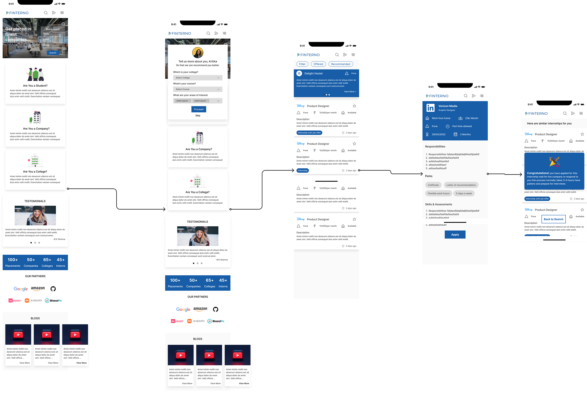

Project vision
Finterno is an Internship discovery service that primarily allows for users to search for Internships, hotels and available pg's with the press of the button. With current Internship applications, the PG availability and sharing of reviews are either non-existent, very limited, or extremely outdated. Finterno aims to fix that by bridging the gap between potential users themselves.
Problems
- Helping users to relocate to the internship locations
- providing seamless experience from applying for jobs to getting stipend and certificates
- allowing users to provide reviews about the company so other users can know the workspace of a company before getting into one
kickstart
Starting off, I asked myself a few initial questions. Who is our primary user? What kind of goals do they have? Why would someone want to use this application? Just how large of a scope do I want this project to be? After interviewing four participants to establish archetypes later on, it became evident that the goals they wanted to accomplish all fell within the same categories; finding out more about their job hunting habits & identifying more of what user want and currently available apps are missing.
Competetive Analysis
In order to construct a concise and solid foundation for Finterno, I had to venture out and see what the prominent internship applications were already doing and what user goals they were not reaching. I evaluated several features deemed vital from user surveys and identified which ones Finterno could capitalize on to have a leg up over other applications.
I found that none of the main competitors offered company reviews to users.
Internshala offers a lot of variety but user does not get to know about company's workspace or any support in relocating or after onboard support
User Persona
Information Archietecture
P&P Wireframes
Before moving onto high fidelity wireframes and mocks, I wanted to get a feel for what the core of the app would look like when put in front of me.
wireflow
Before moving onto high fidelity wireframes and mocks, I wanted to get a feel for what the core of the app would look like when put in front of me.
Challenge 1
Helping Users to relocate.
Creating easy-to-understand data visuals for users was a goal that helped drive this project as far as it did. I solved this issue by adding simple banner to the nearest hotels or pg's available at the internship location mentioned in the application.
Challenge 2
Easy to understand visuals
Creating easy-to-understand data visuals for users was a goal that helped drive this project as far as it did. I solved this issue by keeping the interface simple where user can only look-read-apply
Challenge 3
Company's insights and background
usually companies have reviews or stars about the candidates but what about the candidates who are applying for the job so we added a review system where current or Ex - employees can share there feedback about the company workspace so the candidate can get to know about the company

Style Guide
Utilizing colors consisting of and calm colors felt like the perfect fit for Sew's branding. The yellow helps evoke a happy feeling out of users , and paired with the black it creates a nice balance between calm and energetic. The main typeface of choice for the app is Karla. I felt this typeface best fit the app do to it's extreme versatility through uppercase and lowercase styling.
Takeaways
Being involved in more than 5 internship till now myself, working on Finterno was incredibly rewarding. I got to experiment with some of the new features, and narrow down my design process. learnt more about the users frustration over the cluttered designs tried my best to avoid clutter while keeping the useful Information down the line.